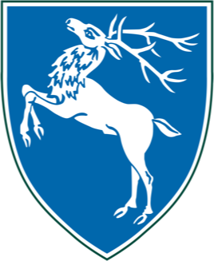

Education
Ulster University
Interaction Design
Previous work:
Interaction Design
Previous work:
- Style Guide
- Personal Brand
- Paula Scher Essay
- Baskerville Project
- Other Work
2015 - 2019

Grosvenor Grammar School
For my A-Levels I studied a combination of Media Studies, Politics and History.
Extra Cirriucular Activities:
For my A-Levels I studied a combination of Media Studies, Politics and History.
Extra Cirriucular Activities:
- Grosvenor Sound Team
- Magazine Committee
- CEOP Youth Advisory Panel member
2008 - 2015
Work Experience

Create
Programme Manager
Programme Manager
Helping to coordinate speakers, promote the event and help generate sponsorship, as well as helping run the event on the day. Developed the brand identity for the event, as well as designing all print materials. Worked to manage the various social media channels, including live-tweeting throughout the day.
2014 - 2015
YouthEast
Co-Founder
Co-Founder
I co-founded this project, and have since been mainly working on the branding identity, design of both the iPhone and Android applications as well as the website. Along with this I’ve made significant contributions in terms of gaining sponsors and connecting with key individuals.
2013 - 2015
Thinkspace
Director
Director
Professional commitments included; developing professional relationships and sponsorships, handling press and media queries, marketing and social media management.
2013 - 2014